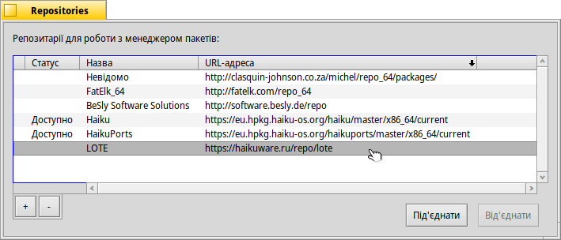

Repositories (Репозитарії)
| Deskbar: | ||
| Розташування: | /boot/system/preferences/Repositories | |
| Налаштування: | ~/config/settings/Repositories_settings |
Repositories (Репозитарії) – це добірки пакетів програмного забезпечення, які зібрані у певному місці. Є стандартний репозитарій Haiku з усіма пакетами операційної системи та HaikuPorts, який містить велику кількість портованого і нативного програмного забезпечення Haiku. Існує ще кілька репозитаріїв, кураторами яких є члени спільноти Haiku. Подивіться сторінку Software Sites на офіційному сайті системи.
Панель налаштувань для управління репозитаріями (її також можна відкрити через менеджер пакетів HaikuDepot, меню ) має такий вигляд:
Перший стовпчик у списку внесених до системи репозитаріїв показує його поточний статус. Якщо репозитарій не під'єднаний до системи, то він не буде опитуватись HaikuDepot або командою pkgman командного рядка. Використовуйте кнопки , або подвійний клік миші для вибраного репозитарія, щоб змінити його статус.
Залежно від розміру репозитарія та швидкості інтернет-з'єднання, під'єднання репозитарія може зайняти кілька секунд. Якщо це займе більше часу, Ви отримаєте повідомлення про завдання, що очікують на виконання, у маленькому текстовому полі над кнопками . Якщо це триватиме надзвичайно довго, Вам буде запропоновано відмінити процедуру або повторити спробу.
За допомогою кнопки «», Ви маєте можливість повністю видалити репозитарій. Перед цим його потрібно від'єднати.
За допомогою кнопки «», Ви маєте можливість додати новий репозитарій. Водночас відкриється така панель:
Щоб додати новий репозитарій, просто вставте його URL-адресу в текстове поле. Він матиме назву «Невідомо», доки Ви його не під'єднаєте.